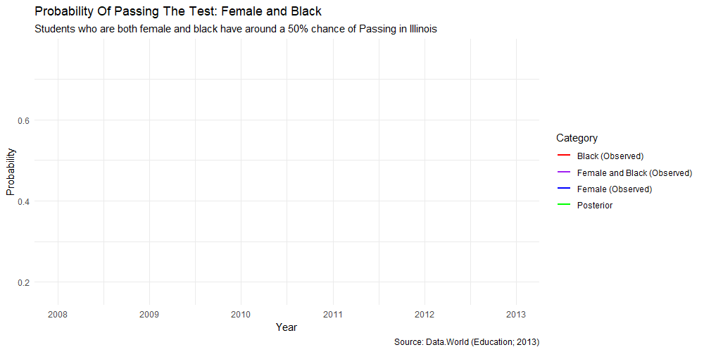

Analysis
Fitted data model and additioanl observataions
Central Question
What is the probability that a student is female and black and passes the AP Exam?
Fitted Model
Graph Logistics -
The graph visually presents the observed proportions and posterior probabilities over time, allowing for easier comparison and identification of trends.
The lines representing “Female”, “Black”, and “Female and Black” display the observed probabilities of passing the test for females, black individuals, and the combined category, respectively.
The dashed line representing “Posterior” shows the predicted probabilities of passing the test for the combined category based on the Bayesian analysis.
Mathematical formula
The mathematical formula of the model used in the code is a simple logistic regression model. In logistic regression, the log-odds of an event occurring (in this case, passing the test) is modeled as a linear combination of predictor variables. The formula for the logistic regression model can be represented as:
log(p / (1 - p)) = β₀ + β₁ * x
Where:
p is the probability of passing the test x is the predictor variable (in this case, it is a constant term of 1) β₀ is the intercept or bias term β₁ is the coefficient associated with the predictor variable
To obtain the probability of passing the test, we apply the inverse logit (also called the logistic function) to both sides of the equation:
p = 1 / (1 + exp(-(β₀ + β₁ * x))
In the code, the model is fitted using the stan_glm function with the formula cbind(num_females_passed, num_females - num_females_passed) ~ 1, which means we are modeling the number of females passed against the total number of females. The intercept term (β₀) represents the log-odds of passing for the reference group (non-females), and the coefficient (β₁) represents the difference in log-odds between the reference group and females.
By transforming the log-odds to probabilities using the plogis function, we obtain the estimated probabilities of passing the test for females, black individuals, and the combined category of female and black individuals over time.
Table
Year Female Black Female and Black Posterior
1 2008 0.547 0.188 0.427 0.645
2 2009 0.712 0.172 0.547 0.645
3 2010 0.770 0.615 0.752 0.645
4 2011 0.650 0.389 0.591 0.645
5 2012 0.590 0.234 0.517 0.645
6 2013 0.640 0.400 0.614 0.645Table Logistics -
The “Female” column shows the observed proportions of females who passed the test. It indicates the likelihood of test success for females in each year.
The “Black” column displays the observed proportions of black individuals who passed the test. It represents the likelihood of test success for black individuals in each year.
The “Female and Black” column demonstrates the observed proportions of individuals who are both female and black and passed the test. It represents the likelihood of test success for this combined category in each year.
The “Posterior” column exhibits the posterior probabilities, obtained through Bayesian analysis, for the combined category of females and black individuals. It represents the predicted probabilities of test success for this category in each year.
Final Thoughts
Selection of Illinois -
The decision to focus on Illinois was driven by two factors. Firstly, the data obtained from Kaggle required proper formatting, leading to a shift towards exploring outcomes within the state. Secondly, the project aimed to examine the odds of success for minority students specifically within Illinois, acknowledging that this percentage reflects the state’s context. It is important to note that when comparing the findings to national data, a notable difference becomes apparent. By centering the analysis on Illinois, this study seeks to provide valuable insights into the educational experiences of minority students and contribute to the understanding of regional dynamics and disparities.
Tying it to issues with minorities in the education system -
The findings underscore the discrepancies in test success rates between different groups, notably women and people of color. Females and black people had lower observed probability, indicating probable disparities and problems in the school system. The Bayesian analysis and posterior probability give insight on potential improvements and solutions to these discrepancies.
Combating the issues -
The findings emphasize the need for targeted efforts and interventions to support and empower minority groups, including females and black individuals, within the education system. Strategies can include promoting diversity and inclusion, providing equal access to resources and opportunities, and addressing biases and stereotypes. It is essential to develop supportive learning environments, foster mentorship programs, and offer educational initiatives that encourage participation and success for all students, regardless of gender or race.